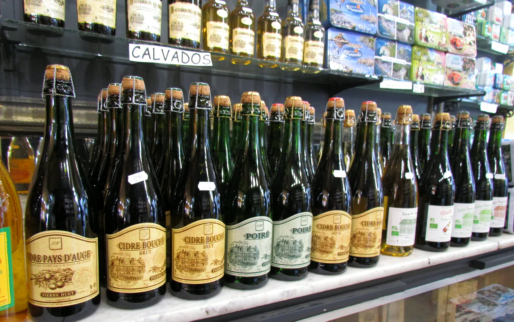
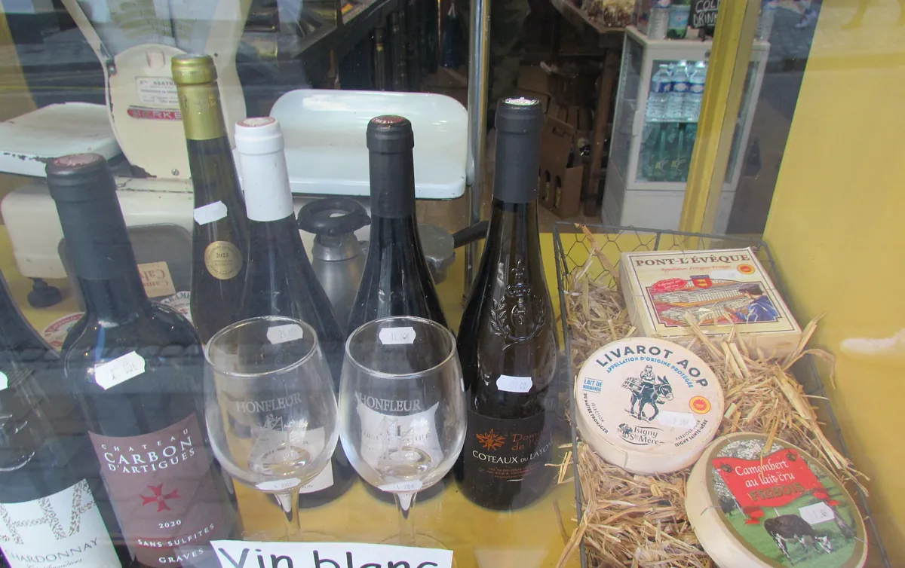
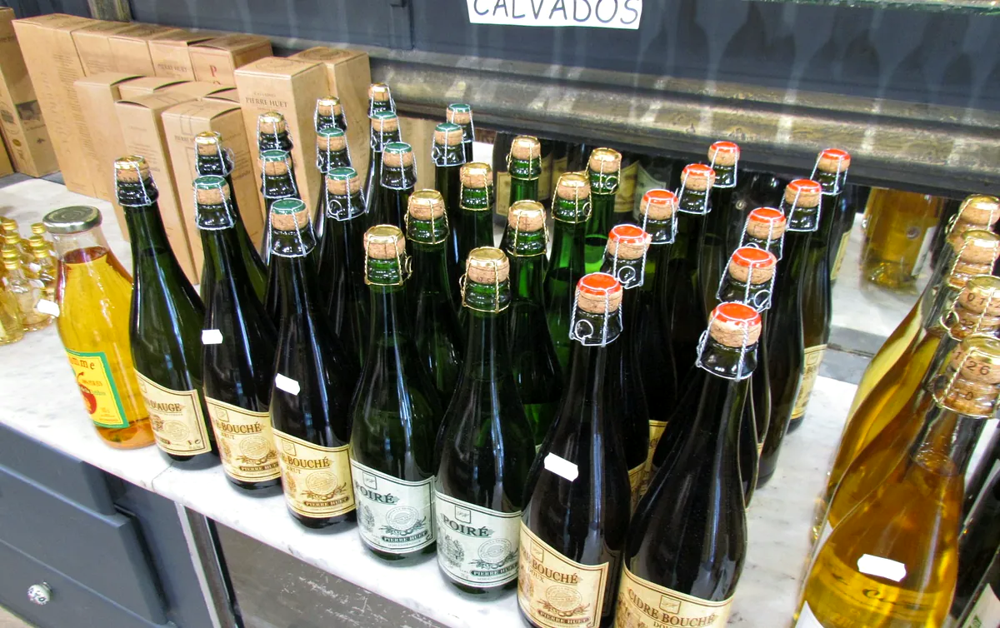
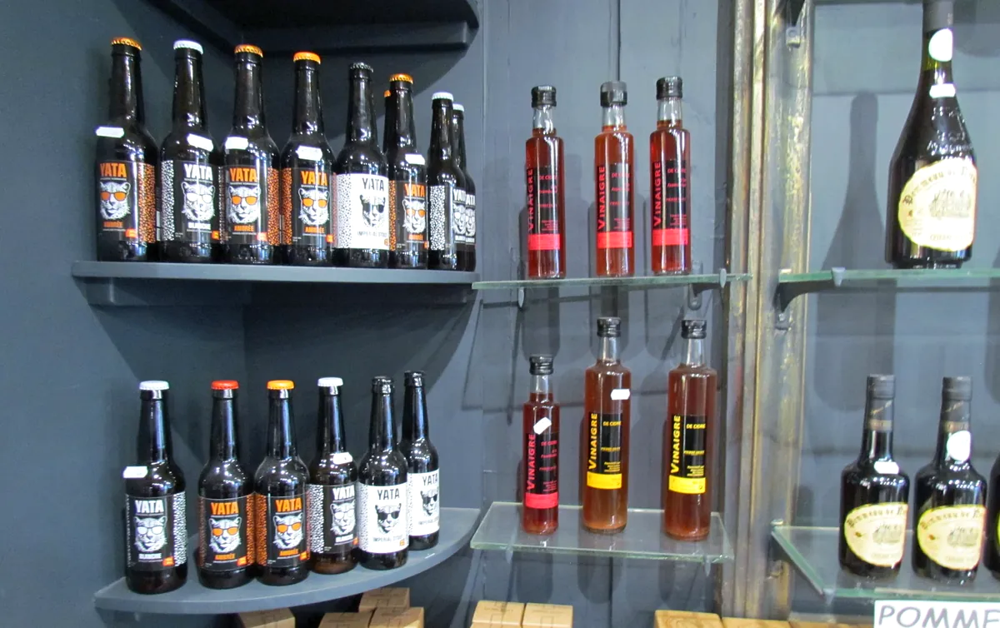
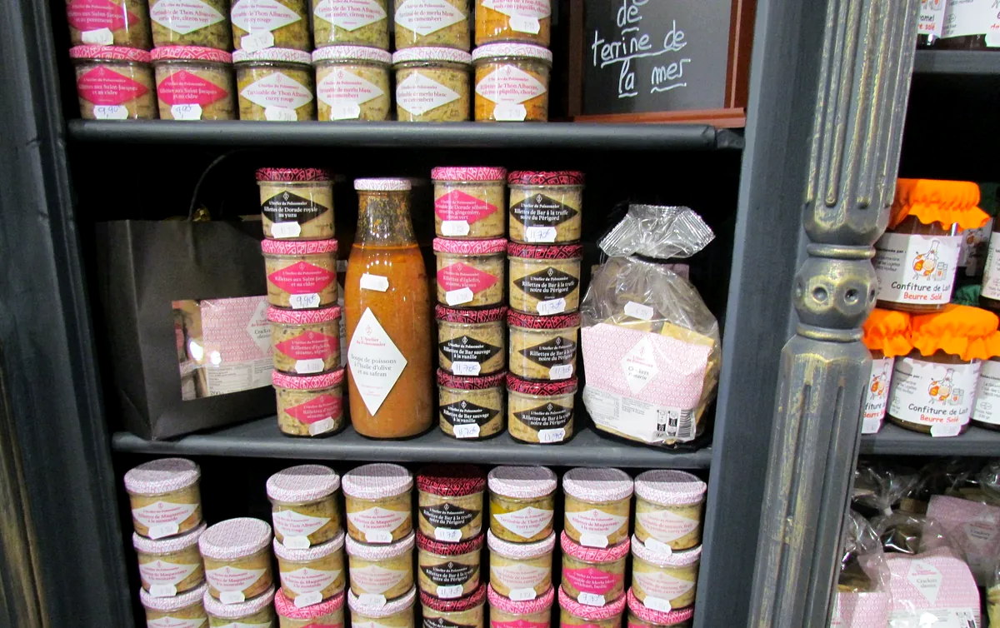
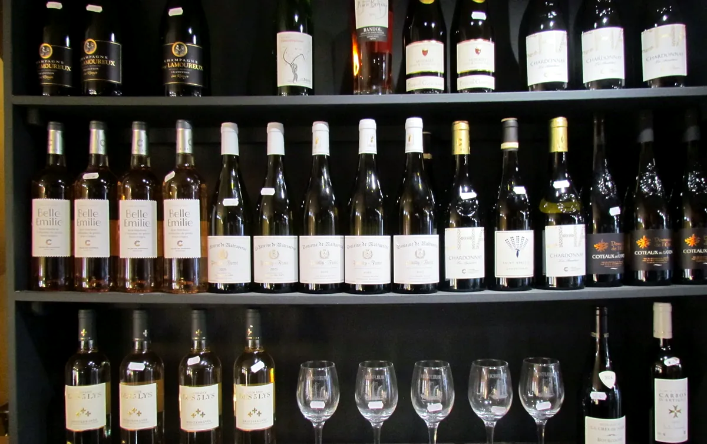
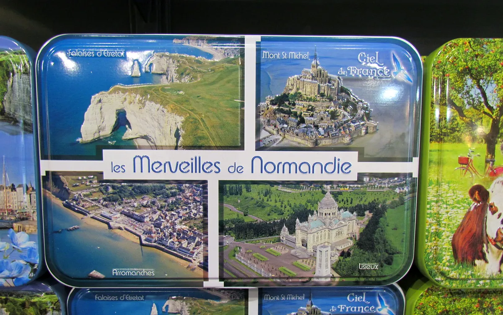
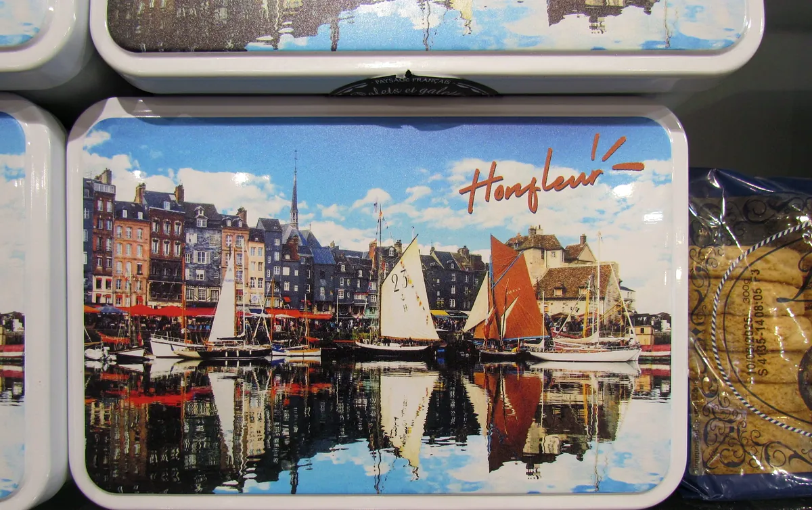
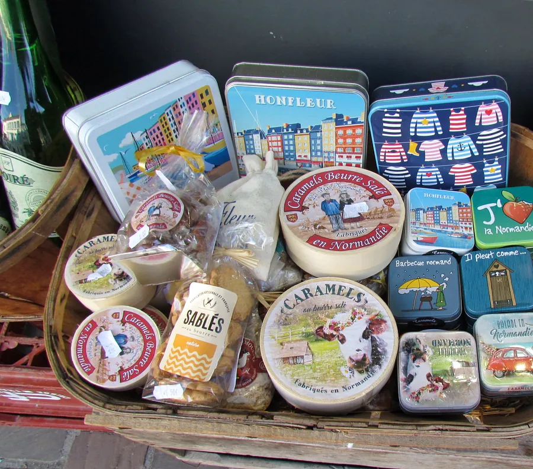

La Gourmandine
On entre pour un cidre.
On ressort avec tout le reste.
La boutique de produits normands de Honfleur : cidres, calvados, terrines, confitures, sablés… et des dégustations pour ne rien acheter à l'aveugle.

Dégustations en boutiqueGoûtez d'abord. Craquez ensuite.
Ici, on ne vous demande pas d'acheter les yeux fermés. Voici ce qui se déguste en boutique : servez-vous du regard, on s'occupe du reste.
À siroter
- Calvados
- Pommeau
- Crème de pomme verte
- Crème de calvados
- Liqueur de poire
À tartiner
- Confiture de lait
- Gelée de cidre
- Terrine de la mer

Blanc, rosé, champagne : au frais, bien sûr.
Un apéro qui se profile ? Dites-le, on vous sort les vins blancs, les rosés et le champagne bien frais.
Ça déborde de partout.
Cidres, poirés et calvados de producteurs normands, bières, vinaigres, terrines, vins, fromages fermiers, confitures, caramels… Du sol au plafond, il y a toujours une étagère qu'on n'avait pas vue.




Le souvenir qui se mange.
Un aimant au bout du frigo, ça finit à la poubelle. Une boîte de sablés aux couleurs de la Normandie, un pot de confiture de lait, une bouteille de calvados : ça, on s'en souvient. Et on la rapporte pleine.



Et le reste ?
On n'a pas tout mis en photo. Volontairement. Il y a ce qu'on voit en vitrine, et il y a ce qu'on découvre en poussant la porte.
Pousser la porteAprès les courses, à table.
L'Enclos, bistrot familial et bar à vin, vous attend au 21 rue de la Ville, à Honfleur. Une cuisine de bistrot, des vins de propriétaires, en terrasse ou en salle.
Découvrir L'Enclos